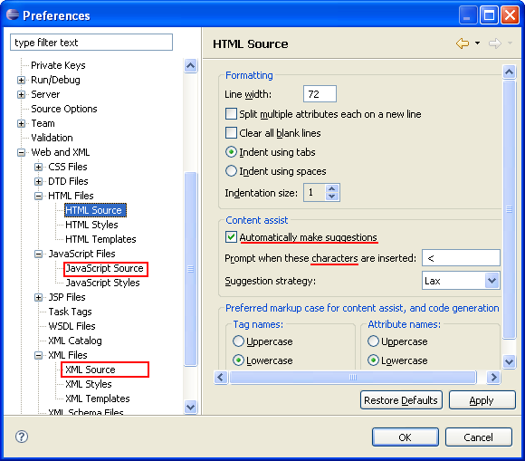

Content /Code Assist is a context sensitive function that helps you to:
Insert or finish Tags and/or Functions
Finish lines of code in the editor
Select and insert templates.
The location of the cursor in existing source code and the configuration options chosen in Preferences provide the context for the suggestions available for code completion.
Press Ctrl+Space
In addition, you can set Content Assist to open automatically when certain characters are typed:
JavaScript - A period/dot, i.e., " . "
HTML and XML - A left bracket , i.e., " < "
To set these preferences, select Windows | Preferences; select Web and XML Files, and one or more of the following options:
HTML Files > HTML Source
JavaScript Files > JavaScript Source
XML Files > XML Source

Figure: Content Assist Preferences
Select the Automatically make suggestions check box (in the Content Assist area).
If you want any additional characters to also trigger content assist, place them into the entry field on the line below the check box.
Set the other options as required (for full explanations of each, refer to Eclipse Help).
Click Apply/OK to apply the settings and exit Preferences.
A pop-up list of available choices is displayed when Content Assist is activated.